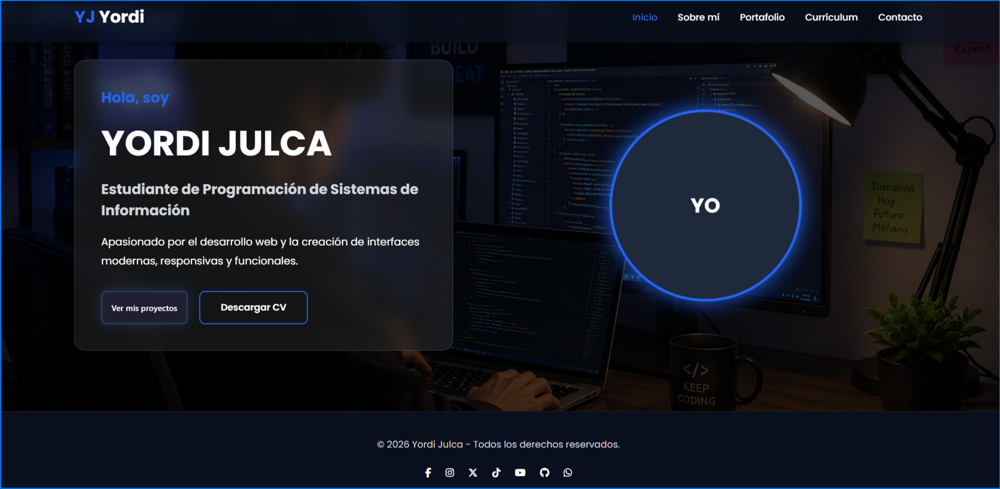

HTML5
Maquetación semántica y estructurada para sitios web.
Soy Yordi Julca, estudiante de Programación de Sistemas de Información del CETPRO Teófilo Méndez Ramos.
Me apasiona el desarrollo web y disfruto crear páginas modernas, organizadas y totalmente responsivas utilizando HTML y CSS.
Mi objetivo es seguir aprendiendo nuevas tecnologías para convertirme en un desarrollador web profesional y crear proyectos cada vez más completos.
Maquetación semántica y estructurada para sitios web.
Diseño moderno, responsive y atractivo.
Adaptación para computadoras, tablets y celulares.
Interactividad y dinamismo en las páginas web.
Desarrollo ideas para crear proyectos modernos.
Colaboración y comunicación para alcanzar objetivos.
Siempre busco mejorar mis conocimientos.
Compromiso y organización en cada proyecto.
Página web sobre inteligencia artificial.
Ver proyecto
Portafolio desarrollado con HTML y CSS.
Ver proyectoNuevos proyectos serán agregados.
Ver proyecto